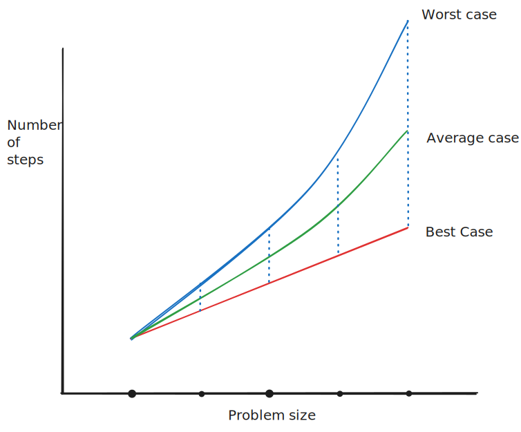
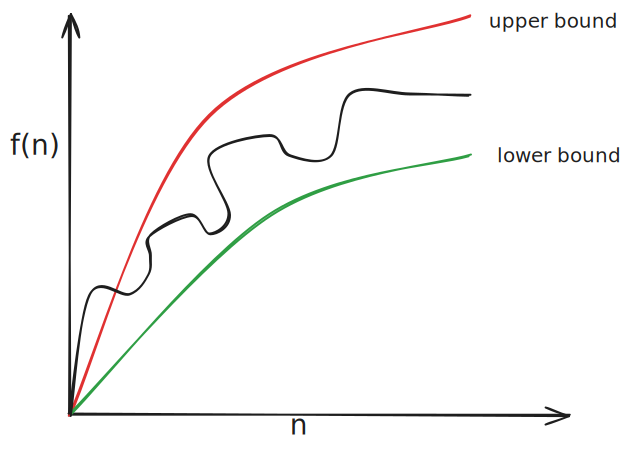
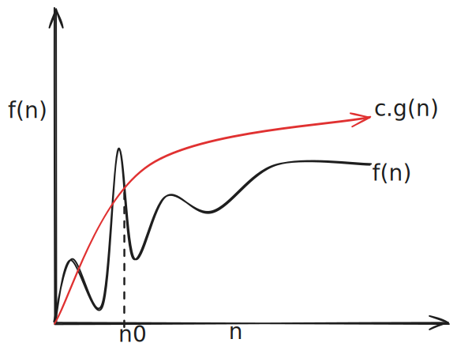
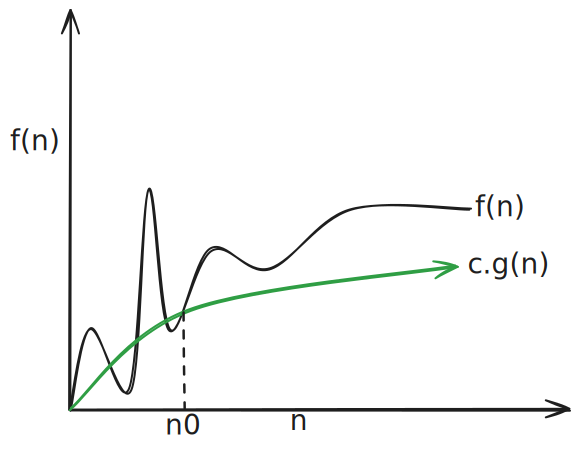
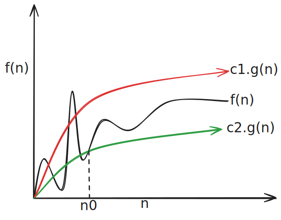

Algorithm analysis
The RAM Model of computation
-
Hypothetical computer called the Random Access Machine
-
Each simple operation (\(+\), \(\times\), \(-\), \(=\),
if,call) takes exactly one time step. -
Loops and subroutines are not considered simple operations. Instead, they are the composition of many single-step operations.
-
Each memory access takes exactly one time step. Infinite memory. No memory hierarchy
-
Count the number of steps an algorithm takes on a given instance of a problem. That give us the runtime in RAM
Complexity
- To understand how good or bad an algorithm is in general, we must know how it works over all possible instances.

-
The worst case complexity of an algorithm is the function defined by the maximum number of steps taken on any instance of size n.
-
The best case complexity of an algorithm is the function defined by the minimum number of steps taken on any instance of size n.
-
The average-case complexity of the algorithm is the function defined by an average number of steps taken on any instance of size n.
-
Each of these complexities defines a numerical function: time vs. size!
-
Generally speaking, we will use the worst-case complexity as our preferred measure of algorithm efficiency.
-
Worst-case analysis is generally easy to do, and "usually" reflects the average case. When we refer to complexity of an algorithm, always assume we are talking about the worst-case, unless otherwise specified!
-
Randomized algorithms are of growing importance, and require an average-case type analysis to show off their merits.
The Big-Oh notation
- Best, worst, and average case are difficult to deal with because the precise details are very complicated.
- May have bumps on some inputs.
- Require too much detail to specify precisely, can't be done without actually implementing it.

-
It easier to talk about upper and lower bounds of the function. Asymptotic notation (\(\mathcal{O}\), \(\mathcal{\Omega}\), \({} \mathcal{\Theta}\)) are as well as we can practically deal with complexity functions.
-
\(g(n) = \mathcal{O}(f(n))\) means \(cf(n)\) is an upper bound on \(g(n)\)
-
\(g(n) = \mathcal{\Omega}(f(n))\) means \(cf(n)\) is a lower bound on \(g(n)\)
-
\(g(n) = \mathcal{\Theta}(f(n))\) means \(c_{1}f(n)\) is an upper bound on \(g(n)\) and \(c_{2}f(n)\) is a lower bound on \(g(n)\)
-
\(c\), \(c_{1}\), \(c_{2}\) are all constants independent of n.
-
The Big Oh notation ignores the difference between multiplicative constants.
- \(f(n) = n\) and \(g(n) = 2n\) are identical in big-oh analysis
-
Furthermore, we arbitrarily choose a constant \(n_{0}\) beyond which the upper or lower bounds are satisfied. We do not care about small values of \(n\).

- \(f(n) = \mathcal{O}(g(n))\) if there are positive constants \(n_{0}\) and \(c\) such that to the right of \(n_{0}\), the value of \(f(n)\) always lies on or below \(c.g(n)\)
 - \(f(n) = \mathcal{\Omega}(g(n))\) if there are positive constants \(n_{0}\) and \(c\) such that to the right of \(n_{0}\), the value of \(f(n)\) always lies on or above \(c.g(n)\)

- \(f(n) = \mathcal{\Theta}(g(n))\) if there exist positive constants \(n_{0}, c_{1}, c_{2}\) such that to the right of \(n_{0}\), the value of \(f(n)\) always lies between \(c_{1}.g(n)\) and \(c_{2}.g(n)\) inclusive.
Big \(\mathcal{O}\) examples
-
\(f(n) = 3n^{2} - 100n + 6 = \mathcal{O}(n^{2})\)
-
\(c =\)
-
\(n_{0} =\)
-
-
\(f(n) = 3n^{2} - 100n + 6 = \mathcal{O}(n^{3})\)
-
\(c =\)
-
\(n_{0} =\)
-
-
\(f(n) = 3n^{2} - 100n + 6 \neq \mathcal{O}(n)\)
Think of the equality as meaning in the set of functions.
Big \(\mathcal{\Omega}\) examples
-
\(f(n) = 3n^{2} - 100n + 6 = \mathcal{\Omega}(n^{2})\)
-
\(c =\)
-
\(n_{0} =\)
-
-
\(f(n) = 3n^{2} - 100n + 6 = \mathcal{\Omega}(n)\)
-
\(c =\)
-
\(n_{0} =\)
-
-
\(f(n) = 3n^{2} - 100n + 6 \neq \mathcal{\Omega}(n^{3})\)
Big \(\mathcal{\Theta}\) examples
-
\(f(n) = 3n^{2} - 100n + 6 = \mathcal{\Theta}(n^{2})\)
-
\(c =\)
-
\(n_{0} =\)
-
-
\(f(n) = 3n^{2} - 100n + 6 \neq \mathcal{\Theta}(n)\)
-
\(f(n) = 3n^{2} - 100n + 6 \neq \mathcal{\Theta}(n^{3})\)
Is \(2^{n+1} = \mathcal{\Theta}(2^{n})\)?
Is \((x+y)^{2} = \mathcal{O}(x^{2} + y^{2})\)?
Big \(\mathcal{O}\) addition and subtraction
-
Suppose \(f(n) = \mathcal{O}(n^{2})\) and \(g(n) = \mathcal{O}(n^{2})\)
-
\(f(n) + g(n) = \mathcal{O}(\_\_\_\_\_?)\)
-
\(f(n) - |g(n)| = \mathcal{O}(\_\_\_\_\_?)\)
-
\(f(n) + g(n) = \mathcal{\Theta}(max(f(n), g(n)))\)
Big \(\mathcal{O}\) multiplication by constant
-
\(\mathcal{O}(c.f(n)) = \mathcal{O}(f(n))\)
-
\(\mathcal{\Omega}(c.f(n)) = \mathcal{O}(f(n))\)
-
\(\mathcal{\Theta}(c.f(n)) = \mathcal{O}(f(n))\)
Big \(\mathcal{O}\) multiplication by function
-
\(\mathcal{O}(f(n)).\mathcal{O}(g(n)) = \mathcal{O}(f(n).g(n))\)
-
\(\mathcal{\Omega}(f(n)).\mathcal{\Omega}(g(n)) = \mathcal{\Omega}(f(n).g(n))\)
-
\(\mathcal{\Theta}(f(n)).\mathcal{\Theta}(g(n)) = \mathcal{\Theta}(f(n).g(n))\)
Asymptotic dominance
| \(n\) | \(\lg n\) | \(n\) | \(n\lg n\) | \(n^{2}\) | \(2^{n}\) | \(n!\) |
|---|---|---|---|---|---|---|
| 10 | 0.003 \(\mu\)s | 0.01 \(\mu\)s | 0.033 \(\mu\)s | 0.1 \(\mu\)s | 1 \(\mu\)s | 3.63 ms |
| 20 | 0.004 \(\mu\)s | 0.02 \(\mu\)s | 0.086 \(\mu\)s | 0.4 \(\mu\)s | 1 ms | 77.1 years |
| 30 | 0.005 \(\mu\)s | 0.03 \(\mu\)s | 0.147 \(\mu\)s | 0.9 \(\mu\)s | 1 sec | 8.3\(\times 10^{15}\) years |
| 40 | 0.005 \(\mu\)s | 0.04 \(\mu\)s | 0.213 \(\mu\)s | 1.6 \(\mu\)s | 18.3 min | |
| 50 | 0.006 \(\mu\)s | 0.05 \(\mu\)s | 0.282 \(\mu\)s | 2.5 \(\mu\)s | 1 days |
| \(n\) | \(\lg n\) | \(n\) | \(n\lg n\) | \(n^{2}\) | \(2^{n}\) |
|---|---|---|---|---|---|
| 100 | 0.007 \(\mu\)s | 0.1 \(\mu\)s | 0.664 \(\mu\)s | 10 \(\mu\)s | 4\(\times 10^{13}\) years |
| 1,000 | 0.010 \(\mu\)s | 1 \(\mu\)s | 9.966 \(\mu\)s | 1 ms | |
| 10,000 | 0.013 \(\mu\)s | 10 \(\mu\)s | 130 \(\mu\)s | 100 ms | |
| 100,000 | 0.017 \(\mu\)s | 100 \(\mu\)s | 1.67 ms | 10 sec | |
| 1,000,000 | 0.020 \(\mu\)s | 1 ms | 19.93 ms | 16.7 min | |
| 10,000,000 | 0.023 \(\mu\)s | 10 ms | 0.23 sec | 1.16 days | |
| 100,000,000 | 0.027 \(\mu\)s | 100 ms | 2.66 sec | 115.7 days | |
| 1,000,000,000 | 0.030 \(\mu\)s | 1 sec | 29.90 sec | 31.7 years |
Testing Asymptotic Dominance
\(f(n)\) dominates \(g(n)\) if \(\lim_{ n \to \infty } \frac{g(n)}{f(n)} = 0\)
This is the same as saying \(g(n) = \mathcal{O}(f(n))\)
Examples:
- \(n^{2}\) vs \(2n^{2}\)
- \(n^{2}\) vs \(n^{3}\)
- \(n^{2}\) vs \(n^{1.9}\)
- \(3^{n}\) vs \(2^{n}\)
Dominance rankings
Commonly encountered functions:
\(n! \gg 2^{n} \gg n^{3} \gg n^{2} \gg n\log n \gg n \gg \log n \gg 1\)
Some more esoteric functions:
\(c^{n} \gg n^{3} \gg n^{2} \gg n^{1+\epsilon} \gg n\log n \gg n \gg \sqrt{ n } \gg \log ^{2}n \gg \log n\)